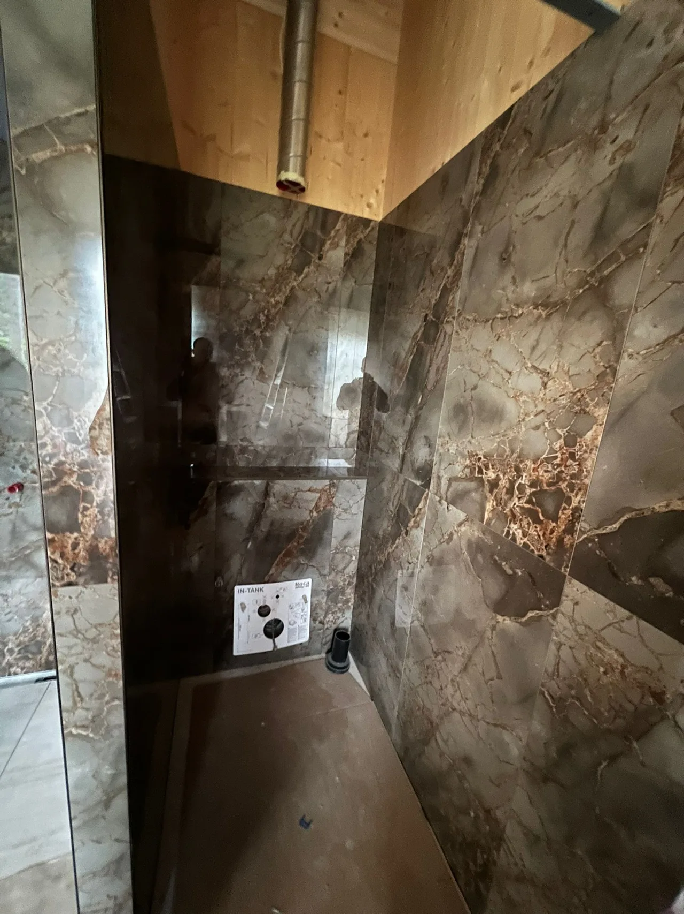

Korteri remont Tallinnas ja Harjumaal
Terviklik korteri renoveerimine alates ettevalmistusest kuni lõppviimistluseni.
3-aastane garantii tehtud ehitus- ja viimistlustöödele
Küsi hinnapakkumistMida korteriremont sisaldab?
RK Meistrid OÜ korraldab korterite remonti Tallinnas ja Harjumaal. Seome lammutuse, aluspindade ehituse ja siseviimistluse ühtseks tööjärjekorraks. Nii saab enne alustamist kokku leppida, milline tulemus peab valmima ning millised tööd ja materjalid pakkumisse kuuluvad.
Värskendusremont
Kui planeering ja tehnosüsteemid sobivad, võib piisata seinte ja lagede parandamisest, värvimisest või tapeetimisest ning põranda ja liistude uuendamisest. Säilitatavad pinnad kaitstakse enne tolmuseid töid.
Täisremont ja kapitaalremont
Põhjalikuma remondi puhul vaatame koos üle ruumide kasutuse, vanad aluspinnad, vannitoa ning elektri- ja torutööde vajaduse. Seinte muutmise võimalused ja tehnilised lahendused selgitatakse enne lammutust, mitte töö käigus oletades.
Korteri remondi tööprotsess
- Objektiga tutvumine ja töömaht. Vaatame üle korteri seisukorra, mõõdud, soovitud tulemuse, ligipääsu ning säilitatavad pinnad. Täpsustame ka kortermajas töötamise korralduse.
- Hinnapakkumine ja ajakava. Koostame tööde loetelu, lepime kokku materjalide hankimise ja valmidusastme. Võimalikud lisatööd täpsustame kliendiga enne nende tegemist.
- Lammutus ja ettevalmistus. Eemaldame kokkulepitud vana viimistluse, korraldame tööala kaitsmise ning lepime kokku jäätmete äraveo. Avatud pindadel kontrollime aluspinna seisukorda.
- Vaheseinad ja tehnosüsteemid. Planeerime karkassi ja kipsitööd koos vajalike juhtmete, torude ja läbiviikudega. Elektri- ja torutööde teostajad ning ajastuse täpsustame eraldi; vajadusel kaasatakse koostööpartnerid.
- Vannituba ja märjad tööd. Valmistame ette aluspinnad, kalded, hüdroisolatsiooni ja plaatimistööd. Järgmised etapid algavad siis, kui materjalide kuivamistingimused seda lubavad.
- Seinad, laed ja põrandad. Parandame ja pahteldame pinnad, lihvime, krundime ning värvime või tapeedime. Põrandakate paigaldatakse pärast sobiva aluspinna ja ruumi niiskustingimuste kontrolli.
- Lõppviimistlus ja üleandmine. Lõpetame kokkulepitud liistud, uksed ja detailid. Vaatame koos üle valminud tööd ning täpsustame pindade kasutamise ja hoolduse.
Korteri remont võtmed kätte
Võtmed kätte remont tähendab kokkulepitud tööprotsessi korraldamist ühest kohast, ettevalmistusest kuni lõppviimistluseni. See sobib, kui soovid mitme eraldi tööetapi asemel ühist plaani, ajakava ja vastutuse jaotust.
Pakkumises määrame, kas remont hõlmab näiteks vannituba, siseuksi, materjalide hankimist või seadmete paigaldust. Köögimööbel, sisustus ja kõik tehnosüsteemide tööd ei kuulu automaatselt tervikremondi hulka. Elektri- ja torutööde korraldus lepitakse kokku vastavalt objekti vajadustele.
Kui palju maksab korteri remont?
Korteri remondi maksumust ei saa usaldusväärselt arvutada ainult põrandapinna järgi. Sama suurusega korter võib vajada kas uut viimistlust või vana sisustuse eemaldamist, aluspindade taastamist ja tehnosüsteemide uuendamist.
- Korteri suurus ja seisukord: ruumide arv, lammutuse maht ning seinte ja lagede parandamise vajadus.
- Vannituba ja kommunikatsioonid: niiskuskahjustused, kalded, hüdroisolatsioon ning elektri- ja torutööde maht.
- Põrandad ja materjalid: vana katte eemaldus, aluspinna tasandus, valitud põrandakate, plaadid ja viimistlusmaterjalid.
- Valmidusaste ja töökorraldus: uksed, liistud, jäätmete äravedu, mööbli kaitsmine, korrus ja ligipääs.
Renoveerimistööde hinnakirjast leiad üksikute tööde orienteeruvad alghinnad. Terve korteri pakkumises täpsustame töömahud ja materjalid eraldi; üksiku töö ühikuhind ei ole korteri täisremondi m² hind.
Päringule lisa korteri pindala, asukoht, fotod, soovitud tööde loetelu ja ajavahemik. Märgi ka, kas korter on tühi või kasutuses.
Saada töö kirjeldus ja fotodÜksikud tööetapid ja seotud teenused
Kui kogu korter remonti ei vaja, saab tellida ka sobivad tööetapid eraldi.
Näiteid korteriremondi tööetappidest
Vaata vannitoa plaatimise tööetappi eraldi projektinäitena. Põrandatööde ettevalmistust ja paigaldust kirjeldab parketi paigalduse teenuse leht.

Miks valida RK Meistrid OÜ?
Korteri remondil on oluline, et ühe etapi tulemus sobiks järgmise töö aluseks. Planeerime tööjärjekorra koos aluspindade kontrolli, kuivamisaegade ja lõppviimistlusega ning määrame pakkumises tööde ulatuse.
- Ühine tööplaan ettevalmistusest üleandmiseni.
- Materjalide ja seotud tööde täpsustamine enne alustamist.
- Olemasolevad tehtud tööde näited ja otsekontakt tööde arutamiseks.
- 3-aastane garantii tehtud ehitus- ja viimistlustöödele.
Materjalid ja tööetapid planeerime ühtseks tervikuks
Tehnosüsteemid enne viimistlust
Enne seinte sulgemist täpsustame elektripunktid, torustiku, ventilatsiooni ja seadmete asukohad. Vajalikud katsed ning kontrollid tehakse enne katmist. Nii ei pea uut värvi, tapeeti või plaate hiljem ühenduste pärast lahti võtma.
Kuivamisajad kuuluvad graafikusse
Pahtli, tasanduse, hüdroisolatsiooni ja liimide kuivamine sõltub tootest ning objekti kliimast. Kõvenenud betoon ei pruugi olla põrandakatte jaoks piisavalt kuiv. Järgmise etapi algus kinnitatakse juhendite ja vajadusel niiskusmõõtmise järgi.
Materjalid ja pakkumise piirid
Valime ruumi kasutusele sobivad värvid, põrandad ja märgruumi süsteemid. Pakkumises täpsustame materjalid, kogused, jäätmeveo, kaitsmise ning tööde üleandmise. Ootamatud aluspinna kahjustused hinnatakse enne lisatöö tegemist; kliendi valikud ja muudatused kajastuvad kokkuleppes.
Päringu ettevalmistamiseks: Lisa ruumide mõõdud ja fotod, soovitud tööde loetelu ning teadaolevad tehnosüsteemide probleemid. Märgi, kas korter jääb remondi ajal kasutusse ja millised mööbliesemed tuleb säilitada.
Korduma kippuvad küsimused
Kui palju maksab korteri remont?
Korteri remondi hind sõltub pindalast, olemasolevast seisukorrast, lammutuse mahust, vannitoa ning elektri- ja torutööde vajadusest, materjalidest ja soovitud valmidusastmest. Täpse pakkumise koostame pärast tööde mahu täpsustamist. Üksikute tööde alghindu saab vaadata hinnakirjast; need ei ole kogu korteri remondi ruutmeetrihind.
Kui kaua korteri täisremont kestab?
Kestus selgub pärast objekti ülevaatust ja tööde loetelu koostamist. Graafikus tuleb arvestada lammutuse, tehnosüsteemide, aluspindade kuivamise, materjalide tarne ja lõppviimistlusega. Tähtaja lepime kokku konkreetse töömahu järgi.
Kas teete korteri remonti võtmed kätte?
Jah, tervikliku korteriremondi saab kokku leppida ühest kohast korraldatava tööna alates ettevalmistusest kuni lõppviimistluse ja üleandmiseni. Pakkumises määrame täpselt, millised tööd, materjalid ja paigaldused sellesse kuuluvad. Mööbel ja seadmed ei kuulu automaatselt remondi hulka.
Kas materjalid võivad olla hinnapakkumises?
Jah, materjalide hankimise saab pakkumises kokku leppida. Täpsustame materjalide valiku, kogused ja selle, mida ostab klient ning mida hangime meie. Nii saab eri pakkumisi võrrelda sama töömahu alusel.
Kas teete lammutustöid?
Jah, kokkulepitud remondi osana eemaldame vana viimistluse ja vajalikud mittekandvad osad. Enne seinte muutmist kontrollitakse konstruktsioone ja kommunikatsioone. Jäätmete äravedu ja tööala kaitsmine täpsustatakse pakkumises.
Kas teete vannitoa remondi?
Korteriremondi koosseisus saab kokku leppida vannitoa ettevalmistuse, aluspinnad, hüdroisolatsiooni, plaatimise ja lõppviimistluse. Torustiku, elektri ja sanitaarseadmete töömaht ning teostajad täpsustame enne alustamist.
Kuidas korraldatakse elektri- ja torutööd?
Vajaduse kaardistame enne seinte ja põrandate sulgemist. Tööde teostajad, vajalik pädevus, vastutus ja ajastus lepitakse kokku pakkumises; vajadusel kaasatakse vastava valdkonna koostööpartner. Need tööd ei sisaldu automaatselt siseviimistluse hinnas.
Kas töödele kehtib garantii?
RK Meistrid OÜ annab tehtud ehitus- ja viimistlustöödele 3-aastase garantii.
Kas korteris saab remondi ajal elada?
Üksiku ruumi värskendamisel võib see olla võimalik, kui tööala saab eraldada. Täisremondi puhul häirivad elamist tolm, müra ning vee või elektri katkestused. Ajutise elamise vajaduse ja ruumide kasutamise lepime kokku enne töö algust.
Planeerid korteri remonti?
Saada korteri asukoht, pindala, fotod ja soovitud tulemus. Nende põhjal saame täpsustada töömahtu ja objekti ülevaatuse vajadust.
Küsi hinnapakkumist